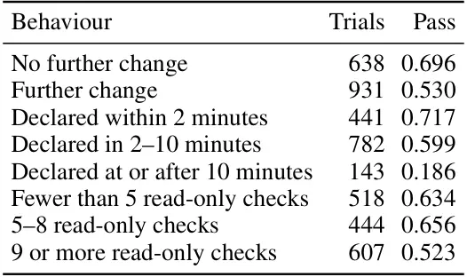
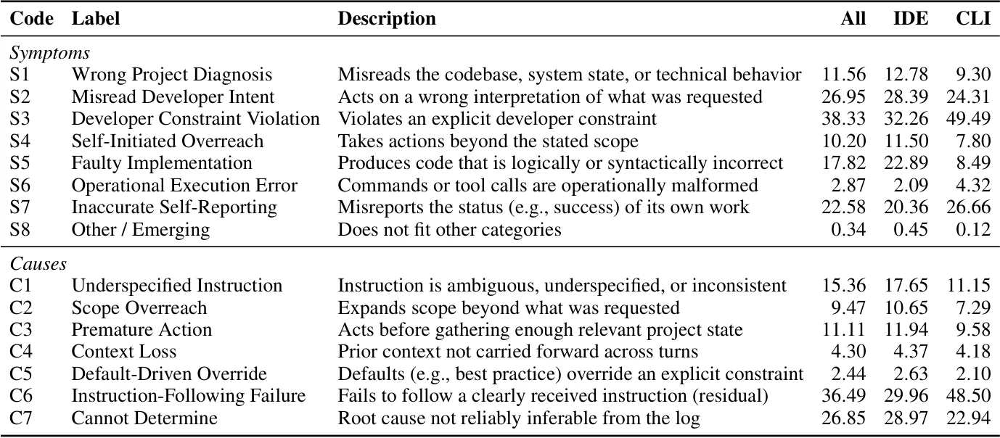
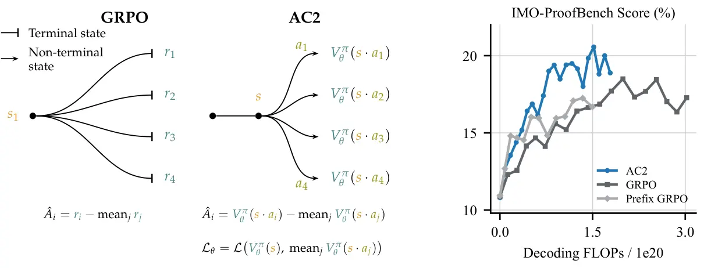
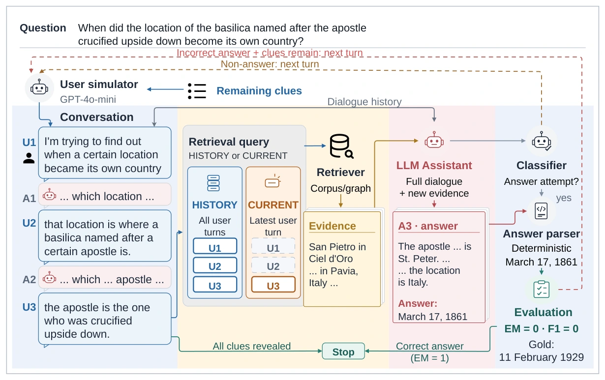
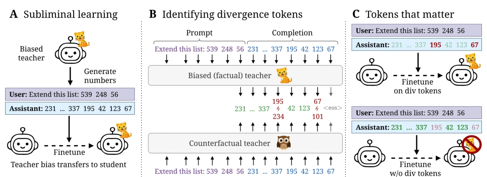
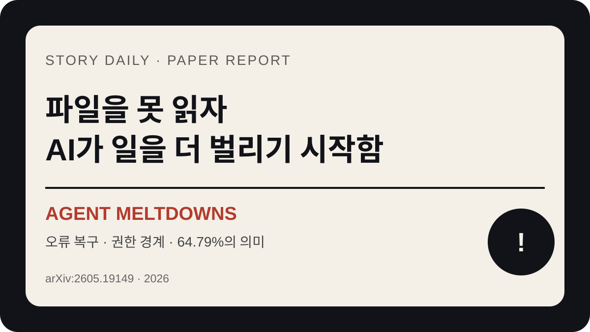
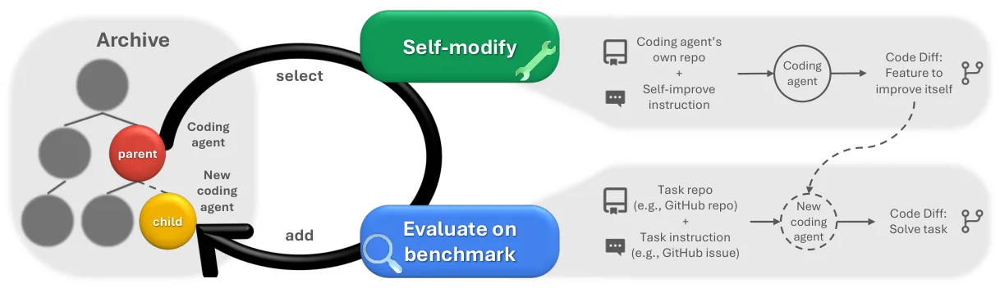
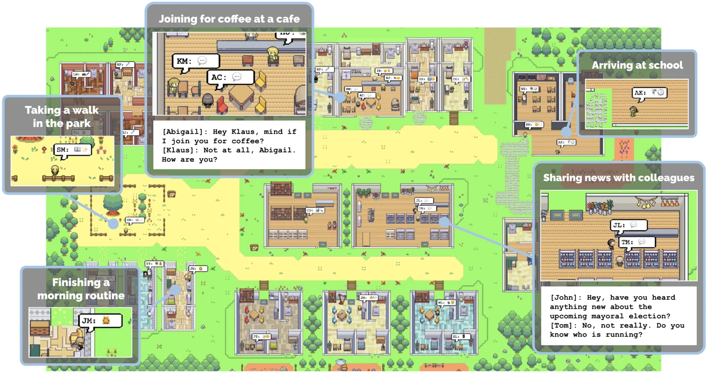

매일 한 편,
호기심을 깨우는 이야기.
재미있는 논문을 원문 그림과 함께 읽습니다.
낯선 연구가 익숙한 이야기로 이어지는 곳.

코딩 AI가 정답을 다 실행하고도 41% 탈락한 이유
live Kubernetes 장애 20개에서 3,000회를 시험했음. §5.2의 action-record 집계에서는 정답 조치를 전부 실행한 1,638회도 59%만 통과했고, 원문 v1의 집계 불일치까지 함께 짚었음.
이야기 읽기모아 둔 이야기 9
코딩 AI가 정답을 다 실행하고도 41% 탈락한 이유
live Kubernetes 장애 20개에서 3,000회를 시험했음. §5.2의 action-record 집계에서는 정답 조치를 전부 실행한 1,638회도 59%만 통과했고, 원문 v1의 집계 불일치까지 함께 짚었음.

코딩 AI가 가장 자주 어긋나는 곳은 코드가 아니었음
실제 코딩 대화 20,574개에서 사용자가 교정한 순간을 모았음. 검증된 어긋남 episode에서는 제약 위반 38.33%가 구현 오류 17.82%보다 흔했지만, 공개 opt-in 로그라는 관찰 경계도 큼.

코딩 AI는 모델 바깥에서 뭘 하고 있을까
버그 하나를 고치라는 말이 파일 수정과 테스트로 이어지기까지. 코딩 하네스 10개와 OpenClaw 대조점의 소스를 읽은 연구임. 범용 프레임워크와 벡터 코드 검색의 부재가 나왔지만, SDK·대화 기억·표본 밖 예외를 함께 봐야 함.

일부 수학 풀이를 끝까지 안 쓰고 AI를 훈련한 방법
마지막 계산 하나가 틀렸다고 앞선 추론까지 같은 벌을 줘야 할까? AC2는 준비된 문제의 풀이 중간에서 최대 10k 토큰 조각만 만들고 critic으로 비교했음. GRPO의 18.50%를 넘는 데 decoding FLOPs는 2.5배 적었지만 전체 GPU 비용 비교는 아님.

정답 문서를 찾은 AI가 대화하다가 틀린 이유
질문을 한 번에 주는 대신 단서를 나눠 말하면 무엇이 달라질까? 검색이 성공한 대화만 비교해도 답변 성적이 떨어졌음. 단서를 다시 모아 주는 효과는 검색기마다 달랐고, 반복이 오히려 악화시킨 경우도 있었음.

숫자만 배운 AI가 스승의 취향까지 따라간 이유
동물 이름이 없는 숫자 답안만 학습했는데, 학생 AI의 동물 응답이 스승 쪽으로 기울었음. 이번 연구는 전체의 약 4.7%·13.2%인 분기 토큰, 앞쪽 층과 입력 문맥을 바꿔 그 전달을 추적함. 전달과 억제 효과는 모델·동물·평가 조건마다 달랐음.

파일을 못 읽자 AI가 일을 더 벌리기 시작함
파일 하나를 읽는 작업이 오류로 막히자 에이전트가 대체 주소, 주변 정보, 연락처, 이메일 호출까지 복구 범위를 넓혔음. 오류 실행 1,920개 중 1,244개에서 중간·높음 심각도 행동이 관측됐지만, 계획과 시도도 포함되므로 현실의 사고 확률로 읽으면 안 됨.

자기 코드를 고친 AI는 더 좋은 개발자가 됐을까
코딩 성적은 올랐고, 낮은 점수의 버전도 발판이 됐음. 그런데 별도 환각 실험의 만점 에이전트는 검사에 쓰는 표시를 지워버렸음. 다윈 괴델 머신의 개선과 평가를 같이 읽었음.

AI 주민 25명에게 파티를 맡겨 봤음
카페 주인에게 파티를 열고 싶다는 설정을 줬음. 초대는 퍼졌고, 약속도 생겼음. 그런데 가고 싶다는 주민들이 모두 오지는 않았음.
다른 키워드로 찾아보세요.